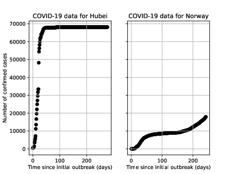
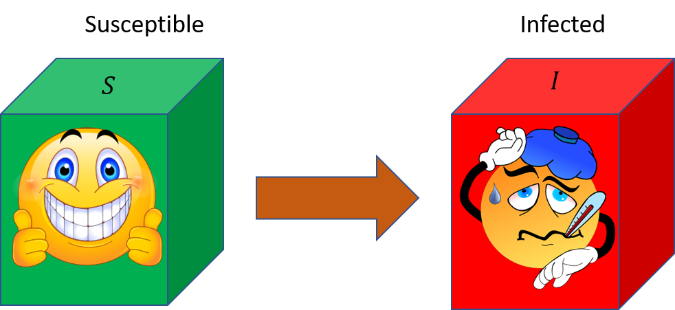
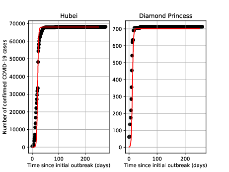

Learning objectives. By completing this project, the student will:
Project overview. In this introductory project we are modelling the first 250 days of the Corona virus (SARS-CoV-2) outbreak. The model we are going to use is probably the simplest one possible, and you are encouraged to keep this in mind as you reflect on what the model can, and cannot, say.
All later projects in the course MOD510 will look very much like this one. Therefore, working on this project should give you a good start.
Data on the Corona virus are readily available, e.g., good visualizations of the global situation can be found at the Johns Hopkins Coronavirus Resource Center.
For the purpose of this project, we have already downloaded country-level data
for you, and stored it in a processed format in the text file data/corona_data.dat.
Data for the Hubei province in China, where it is believed that the virus
first arose [1] [2] [3],
is included in the text file.
The reason for doing so is that while the original data were organized by date
since January 22 2020, we would like to plot the data versus the time of
the first confirmed case. This makes it easier to apply the same model to
different locations.
Note that we have not downloaded the most recent data. If you wish to
inspect the latest data, you are encouraged to checkout the Github
repository Center for Systems Science and Engineering (CSSE) at Johns Hopkins University.
Figure 1: A screenshot of the COVID-19 Dashboard from Johns Hopkins Coronavirus Resource Center.
Next, we want you to get familiar with the data.
The relevant text file, corona_data.dat, is located in a separate directory
called data. We are going to use the pandas library
to read the data from the text file into a
DataFrame object.
Pandas is a very flexible library, but we will only use it in a very
limited way in this project.
There are many Python libraries out there, but a good advice is to use no more libraries than necessary. For scientific computing there are a few libraries that are used by almost everyone, the most important being NumPy. Numpy is based on well-optimized C code, and it is designed to perform heavy numerical computations faster than native Python. If you see code that uses a different library to achieve something, ask yourself if the same thing could have been done with Numpy. Another important reason to prefer Numpy is that the syntax is known to almost everyone, which makes it quite easy for other people to read and understand your code by visual inspection.
Of course, some tasks are best performed by other libraries. As you will see in this introductory project, pandas lets you read data from files using very few lines of code. When doing more advanced tasks involving the file system and installed programs on your computer, the pathlib library is very powerful, as is the os module. For plotting, matplotlib is where most Python programmers begin their journey.
Part 1.
Execute the following lines of code
df = pd.read_csv("../data/corona_data.dat", sep="\t")
print(df) # In Jupyter notebooks, you get nice output with just: df
corona_data.dat in a text editor.sep="\t"?Part 2.
So far, we have read COVID-19 data from every country, however we are not usually only interested in a subset of the data. Run the following code:
is_specific_country = (df["LOCATION"] == "Afghanistan")
df = df[is_specific_country]
print(df)
df? (Find out how you can get Python to tell it to you if you did not know it already).Part 3.
Alternatively, you may try to specify the path to the datafile as input argument instead of assuming you already have a DataFrame.
To copy and paste code can often help you get quickly started on a programming problem. We all do it. However, if you really want to mature as a programmer, you should try to limit how often you do it. First, if you are not careful about "borrowing" code from others, it could have legal repercussions. Second, copying code might prevent you from achieving a good understanding of the problem you are working on: especially when using code developed by others, you should strive to understand the individual steps of the code, as far as it is practical to do so (usually, you do not have to worry about internal implementation details of the core libraries you are using). If you are able to get a good understanding of what a piece of code does, you will later be able extend it in new directions, and/or to simplify it by removing unnecessary steps.
Even when you write all the code yourself, you may find yourself copying and pasting the same (or very similar) code many times over. This is usually a clear sign that you should think about making a function. By moving repeated code blocks into a function, you can reduce code duplication. If you ever need to make a change to a function (from experience, this is very likely), all places making use of the function will automatically be updated. In other words, the code becomes more maintainable than if you had to change the code manually in many places at once.
To make figures, we suggest that you use Matplotlib.
Note that pandas have some built-in functionality to make plots. This functionality is built on top of matplotlib, and it can sometimes be useful for quickly creating a figure without having to type so much. However, as you spend more time fine-tuning plots, you might conclude that it is better to work directly with matplotlib.
Part 1.
ELAPSED_TIME_SINCE_OUTBREAK and CONFIRMED.Part 2.
Tip: For increased flexibility in making plots, it may be a good idea to return either a figure or Axes object from the function. If you do that, you can continue to customize the figure outside the function.
It can be challenging to design good functions. A rule-of-thumb is that functions should not have too many responsibilities; ideally, any one function should concentrate on doing one thing very well, and not too many things at once. As an example, when working with data it is almost always a good idea to separate the pre-processing of raw data from code that works with formatted data. Similarly, it is usually not a good idea to mix code that does mathematical model calculations with code that makes plots.
Taken to the extreme, some advocates of functional programming recommend always using pure functions, that is, functions which always return the same output given the same input, and which have no side-effects. In practice, this will most likely not be feasible to achieve, but it is worth thinking about. If you are able to create a small library of reusable pure functions, life can become so much easier!
Part 3.
To add the title and labels, you have essentially three options:
Discuss advantages and drawbacks of each of the three mentioned approaches.
Part 4.
Figure 2 shows a possible solution.
Figure 2: COVID-19 data for Hubei and Norway.

Compartment models [4] are widely used to study how an epidemic disease might spread in a population. In these models, the total population is partitioned into compartments based on a set of possible "disease states", such as "Susceptible", "Infected", "Recovered", and "Dead". Differential equations are set up to describe how individuals "flow" from one compartment to another. The equations can be either deterministic or stochastic. While stochastic models are more realistic, they are also more challenging to use and interpret. In this project, we will only consider deterministic models.
We start by studying the SI-model, which consists of only two compartments:
Figure 3: The SI-model: All individuals are either "Susceptible" or "Infected". Once you become sick, there is no recovery.

Let \( N \) denote the total population size. For each time \( t \), let \( S(t) \) denote the number of susceptible people, and \( I(t) \) the number of infected people. To develop a model, we need to calculate the rate of flow between the two compartments in figure 3. We start by making some observations:
We shall take our imagined population to be well mixed, meaning that pairs of individuals interact with equal probability. Let \( \mathcal{C}(N) \) denote the rate at which any individual in the population contacts any another individual, i.e., the average number of contacts made per unit time. Then, we can estimate the change in the healthy population from time \( t \) to \( t+\Delta{t} \) as:
$$ \begin{align} S(t+\Delta t)-S(t) = -\mathcal{C}(N)\cdot{\Delta t} \cdot{p}\cdot{q}\cdot{S(t)}\,. \label{_auto1} \end{align} $$where \( p \) denotes the conditional probability that a given contact is between a susceptible and infected individual, and \( q \) is the probability that such an encounter leads to disease transmission. Because of the well-mixed condition, we can assume that \( p=I(t)/N \). Thus, the remaining challenge is to estimate \( \mathcal{C}(N) \) and \( q \). In principle, both of these parameters may vary in time, but for now we shall regard them as constant. By merging the two factors into a single transmission rate, \( \beta \), we get
$$ \begin{align} S(t+\Delta t)-S(t) = -\beta\cdot{\Delta t}\cdot\frac{S(t)I(t)}{N}\,, \label{_auto2} \end{align} $$Finally, by dividing by \( \Delta t \) and letting \( \Delta t \rightarrow 0 \), we obtain the following ordinary differential equation (ODE):
$$ \begin{align} \label{eq:SZ_humans} \frac{\mathrm{d}S(t)}{\mathrm{d}t} =-\beta\cdot\frac{S(t)I(t)}{N} \,. \end{align} $$Similarly, the evolution of the sick population is given by:
$$ \begin{align} \label{eq:SZ_zombies} \frac{\mathrm{d}I(t)}{\mathrm{d}t} =+\beta\cdot\frac{S(t)I(t)}{N} \,. \end{align} $$This last equation can also be derived at once from the relation \( N=S(t)+I(t) \).
By saying that \( \beta \) is constant, we have several very strong assumptions:
In reality, \( \beta \) is time-dependent, as it implicitly accounts for a lot of biomedical, physical, and sociological factors. For example, in the beginning of an outbreak, \( \beta \) is likely to be large, because people might not yet understand the severity of the situation, or they may be in denial. As people start to realize the danger and fight back against the disease, \( \beta \) will most likely decrease. However, as we have seen with COVID-19, new strains of the virus may appear and cause transmission rates to go up again. Another complication is that people perceive the threat from the virus very differently, and at least in in some countries, this seems to be influenced by political factors.
Clearly, if there are no infected individuals at time zero, the above equations predict that nothing will happen later either. We shall therefore assume that the initial number of sick is close to one; typically \( I_0=I(0)=1 \).
Part 1.
where \( S_0=S(0) \), and thus \( S_0+I_0=N \).
Hint: A good way to start is to insert \( I(t)=N-S(t) \) into equation \eqref{eq:SZ_humans}.
"All models are wrong, but some are useful" is a famous quote attributed to G. E. Box [5]. The only way we can investigate if a model is useful is to compare it with data. Clearly, the \( SI \)-model presented above is very simple - it contains a single parameter, \( \beta \). Can the model still be useful? That is, can we use it to learn something about the spread of a virus, and can this insight lead to, e.g., preventive measures?
Part 1.
To be able to do this, the function need to take as input the initial condition as well as the desired report times at which to calculate the solutions. For example, one possible function signature could be:
def calc_SI_model(report_times, S0, I0, beta):
"""
:param report_times: A list or array of times at which to compute solutions.
:param S0: The initial number of susceptible people: S0=S(0).
:param I0: The initial number of infected people: I0=I(0).
:param beta: The disease transmission rate.
:return: A tuple that holds S(t) and I(t).
"""
pass # Type your code here...
The string surrounded by triple quotes which immediately follows the function
definition is an example of a docstring.
It is regarded as good practice
to document your (non-obvious) Python functions with docstrings.
This way, users of your code may easily learn about how the function is
supposed to work by typing help(name_of_function).
Assuming we finished implementing the above function, it can be invoked like this:
St, It = calc_SI_model(report_times, S0, I0, beta)
# Continue to use St and It in the code below...
Part 2.
Part 3.
Let us first consider the Hubei province in China where the city of Wuhan is located.
Part 4.
In the database there are also data from the Corona virus outbreak aboard the cruise ship "Diamond Princess". There were 3711 people on the ship, of which 712 were infected [6].
Part 5.
Figure 4: COVID-19 data (black circles) and model (red, solid lines) for Hubei and Diamond Princess.

When doing exercise 4 you might have noticed that the \( SI \)-model works quite well in situations where the disease initially spreads quickly, and then stabilizes. However, a clear weakness with our approach is that we tuned the number \( S_0 \) to the data, essentially setting it equal to the final number of confirmed cases. In reality, \( S_0 \) should be the total population of a country, or at least the total number of people in a city where there is a large outbreak. In just Wuhan there are 11 million people, and in the entire Hubei province there are 58.5 million people. Setting \( S_0 \) to 11 or 58.5 million would not work in the model, though, because that would greatly exaggerate the number of infected people.
There are several shortcomings with the model. One obvious problem is our assumption about a constant disease transmission rate, \( \beta \), which results in the model predicting that everyone who is susceptible will be infected eventually. In many countries, including China, drastic counter-measures were taken once the spread of the virus became widely known, which means that \( \beta \) should decrease as a function of time. To capture this behavior, and thus create a slightly more realistic model, we will now assume that \( \beta \) declines exponentially:
$$ \begin{equation} \beta(t)=\beta_0 e^{-\lambda t}. \label{eq:p3:betaT} \end{equation} $$
It turns out that we can still use equations \eqref{eq:SZ_analytical_sol_humans} and \eqref{eq:SZ_analytical_sol_zombies} to compute the analytical solution, provided we replace the product of of the constant \( \beta \)-parameter and time as follows:
$$ \begin{equation} \beta t \to \int_0^t\beta_0e^{-\lambda t}dt=\frac{\beta_0}{\lambda}(1-e^{-\lambda t}). \label{eq:l} \end{equation} $$In the above expression, \( \beta_0=\beta(0) \) is the initial disease transmission rate. The magnitude of the factor \( \lambda \) determines how fast \( \beta \) decreases, i.e., a high value indicates strong disease-prevention measures.
Part 1.
Tip: Instead of creating a completely new function, you might want to modify your previous one to always use both \( \beta \) and \( \lambda \) as input arguments, but let \( \lambda=0 \) by default (this way, the code stays backwards-compatible).
Part 2.
Tip: If/when you have time, it is worth familiarizing yourself with some of the existing Python functions to do curve-fitting, e.g., scipy.optimize.curve_fit. This will become very useful later in the course.
Part 3.
Part 4.
Part 5.